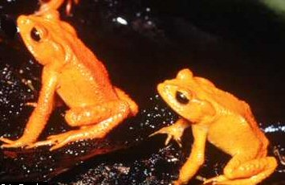

Sunday, September the 26th, 2004
back to: title, date or indexes
I wish to refute, while sipping from a glass of milk of magnesia, some of the less plausible claims made by that odious charlatan Dennis Cargpan in his woeful and, let's face it, mercenary lecture delivered from the crumbling balcony of the civic hall at Bodger's Spinney on Thursday last during the most tremendous hailstorm I have ever seen in my life to a gathering of bestial ingrates and orphans who were corralled into the square by Cargpan's team of electric-cattle-prod-wielding ruffians and forced to applaud his preposterous statements.
Chief among these statements was his contention that toads are shy, usually nocturnal animals, hiding during the day in dark, damp places and hopping about at night in search of insects, grubs, slugs, worms, and other invertebrates; that they are often brownish or greyish in colour and have warty skin, a flat head, swollen parotid glands on the side of the neck behind the eyes, bright, jewel-like eyes with a transverse pupil, and slightly webbed toes; that they are often stouter than frogs and cannot leap as far; that the tongue of the toad is attached to the front of its mouth; that the tongue is flicked forward from the mouth, and the sticky tip grasps the prey and carries it back to the mouth; that unlike most frogs, most toads do not have teeth; that the tongue produces quantities of mucus to help in swallowing; that all anurans blink when they swallow; and because there is no bone between the eye and the mouth, the eye is pushed against the roof of the mouth, forcing the food further back.
Let me just sip some milk of magnesia before refuting this twaddle.
There! I refute it, utterly. I do not refute it on the basis of scientific fact, nor on my own acute observation of the natural world, nor do I refute it because I have read many, many learned papers about toads which counter these statements. Similarly, I do not refute it in homage to my mother, who was a self-proclaimed expert on toads and passed down her hard-won knowledge to me, because my mother was bonkers and confused toads with wrens, and it should come as no surprise that all those articles about toads she sent off to the Reader's Digest and the Daily Telegraph were tapped out on a special padded typewriter from her room in the Saint Cynthia Mercy Home For The Deranged And Bewildered. No. I refute this drivel simply because I bear a grudge against Dennis Cargpan. One day he will burn in hell. In the meantime I shall not rest from my refutations of every word he utters from that pinched and slippery mouth of his. Well may he regret the day he chuckled at my bouffant!

Eerie golden toads : approach with caution
Hooting Yard on the Air, September the 30th, 2004 : “A Refutation of Some of the Less Plausible Claims Made by Dennis Cargpan in His Woeful Lecture Delivered From the Balcony of the Civic Hall at Bodger's Spinney on Thursday Last During a Hailstorm to a Gathering of Ingrates and Orphans” (starts around 00:09)
Hooting Yard on the Air, November the 8th, 2006 : “Untitled Work in Progress” (starts around 12:51)